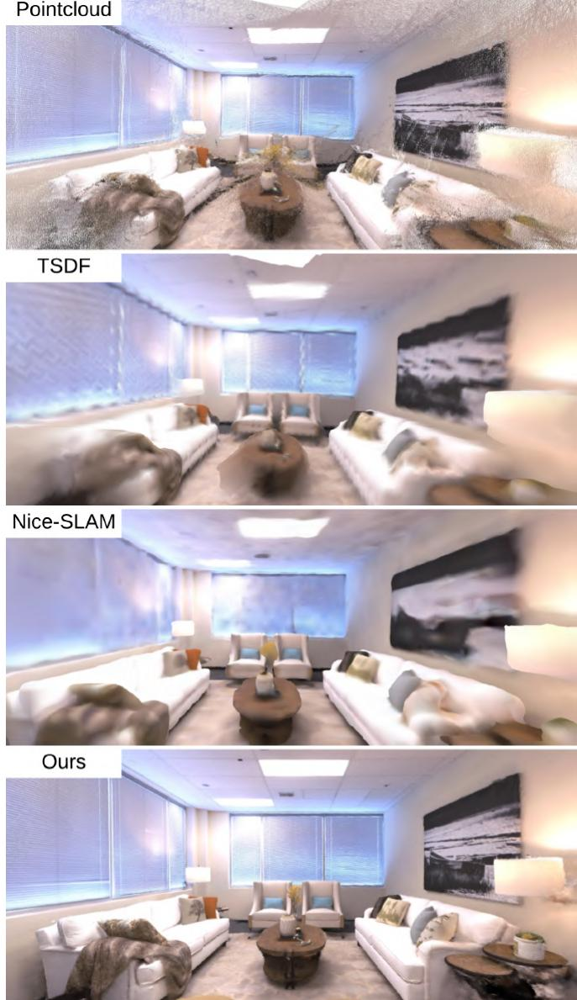
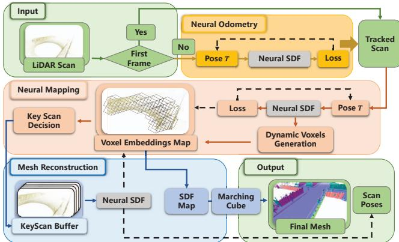
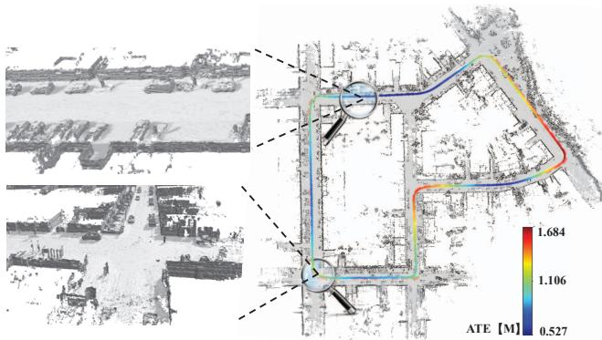
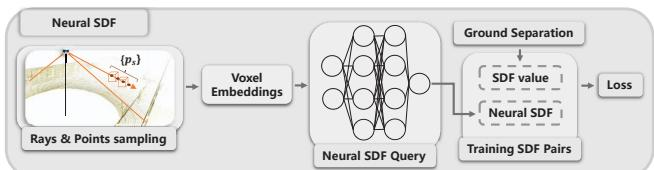

有没有回环：没有。正文从头到尾无 loop closure；GO-SLAM 正文也点名它「absence of online loop closing and full BA」。它的全局一致靠 DROID-SLAM 的稠密 BA在线维持，但不是回环修正。
原图注（Fig. 2）：Architecture: DROID-SLAM (blue) provides poses and depth; Rosinol (purple) computes marginal covariances; our NeRF mapping (red) is supervised by depth weighted by its covariance.
（中译：架构：DROID-SLAM（蓝）提供位姿与深度；Rosinol（紫）计算边际协方差；本文 NeRF 建图（红）由按协方差加权的深度监督。） 怎么看这张图：① 颜色分区（蓝/紫/红）正是「组合式」的可视化——蓝是别人的前端，红是自己的建图；② 注意深度是被协方差加权的，不确定度高的深度权重低，这正是它抗鬼影的关键。
原图注（Fig. 1）：From left to right: RGB, depth uncertainty, back-projected point cloud, thresholded point cloud, neural radiance field.
（中译：从左到右：RGB、深度不确定度、反投影点云、阈值后的点云、神经辐射场。） 怎么看这张图：① 第二列「深度不确定度」是它借来的关键信号——亮的地方不确定度高；② 最后两列是它建的 NeRF 场景。把它和 Fig.2 一起看，就能完整理解这条「借位姿 + 建图」的路线。

原图注（Fig. 3）：Qualitative on Replica office-0: from raw point cloud (front-end) to our reconstruction, compared with σ-Fusion and NICE-SLAM.
（中译：Replica office-0 定性结果：从前端原始点云到本文重建，对比 σ-Fusion 与 NICE-SLAM。） 怎么看这张图：看它在 Replica 上比 NICE-SLAM 更干净的重建，体会「组合式」为何能又快又好。但请记住：它没有回环，这是规模化的另一面代价。
怎么处理大场景（分块/子图）：八叉树天然是「按需开桶」——激光扫到新区域才生成新体素 embedding，不预分配整张全网格，所以能跑大场景。还做了地面分离 SDF 抑制 Z 轴漂移。
增量式的含义：逐帧用射线在 SE(3) 切空间梯度下降优化 6 自由度位姿，前 K 帧后冻结网络、几何存进体素；靠 key-scan buffer 联合精修来缓解「前 K 帧灾难性遗忘」。
有没有回环：没有。所谓「loop」在正文里只是「time-consuming loop queries」（代码循环）和作者名 Charles Loop，不是回环检测。key-scan 精修是「防遗忘」，不是回环。

原图注（Fig. 4）：Our NeRF-LOAM Overview. Given a LiDAR stream, outputs poses and a reconstructed mesh map with three modules: 1) neural odometry; 2) neural mapping; 3) mesh reconstruction. The dashed line represents back projection.
（中译：总览。给定激光流，输出位姿与重建网格地图，含三模块：神经里程计、神经建图、网格重建。虚线代表反投影。） 怎么看这张图：① 三模块串起来就是「激光 → 位姿 + 地图 → 网格」；② 这是激光隐式增量建图的总纲图，请顺着虚线（反投影）看数据流。

原图注（Fig. 1）：Simultaneously odometry and dense mapping results on KITTI07. The odometry results are colored by the absolute trajectory errors (ATE). Our proposed novel NeRF-LOAM accurately estimates the poses and reconstructs the dense mesh map of the outdoor large-scale environment.
（中译：KITTI07 上的里程计与稠密建图结果，里程计按 ATE 着色。本文准确估计位姿并重建户外大尺度环境的稠密网格地图。） 怎么看这张图：这是它「户外大尺度激光隐式」的招牌证据。但要清醒：它没有回环、靠 key-scan 精修兜底，全局一致性由 PIN-SLAM 那类带回环的工作补足。

原图注（Fig. 2）：The modified neural SDF. After ray and point sampling, the voxel embeddings are fed to a network to query the neural SDF after ground separation.
（中译：改进的神经 SDF。射线/点采样后，体素 embedding 喂入网络，在地面分离后查询神经 SDF。） 怎么看这张图：这张图讲清了「八叉树体素 embedding → 网络 → SDF」的数据流，以及「地面分离」这一步怎么让激光隐式更稳。
有一个常见误传：PLGSLAM 用 ORB-SLAM3 提供位姿。但正文不支持。它只在引言把 ORB-SLAM 当传统方法举例、在表格当 baseline；它自称「integrate the traditional SLAM system with an end-to-end pose estimation network」，跟踪线程用神经 warping 损失 + SIFT 重投影误差做局部到全局 BA，没有说用 ORB-SLAM3 出位姿。本课的写法以正文为准。
这张图在画什么：PLGSLAM 的「渐进式」——同一个场景在三个时刻被渲染的精细度，从左到右越来越高。 怎么看这张图：① 第一格只看到大块形状（单一局部场）；② 第二格走远了，新建第二个局部场、旧的冻结，家具轮廓出现；③ 第三格经过全局 BA，局部场被拼合、误差被消除，纹理清晰；④ 每格下标注出「当前优化的范围」。 要记住的一句话：单一全局场装不下大场景，所以切成可拼的局部场，再靠全局 BA 把缝对齐。
原图注（Fig. 1）：Large-scale indoor scene 3D Reconstruction with different methods. We depict the final mesh and camera tracking trajectory error (ATE) … PLGSLAM outperforms others in both scene reconstruction and pose estimation.
（中译：大尺度室内场景三维重建对比。展示最终网格与相机跟踪轨迹误差（ATE）……PLGSLAM 在重建与位姿估计上都更优。） 怎么看这张图：这是它「大尺度室内」的招牌证据。配合下面的 Fig.2（双线程）、Fig.3（神经 warping 损失）一起看，能理解渐进表示与两级 BA 怎么落地。
原图注（Fig. 2）：The isometric view of the proposed PLGSLAM system. Two parallel threads: the mapping thread and the tracking thread … combine the tri-planes with the MLP …
（中译：PLGSLAM 系统的等距视图。两条并行线程：建图线程与跟踪线程……把 tri-plane 与 MLP 结合。） 怎么看这张图：这张图展示「渐进场景表示（建图线程）+ 局部到全局 BA（跟踪线程）」的双线程结构。注意它用的是 tri-plane（三平面）而非点云或哈希网格。
原图注（Fig. 3）：This figure illustrates the designed neural warping loss. We calculate the neural warping loss between keyframe I and keyframe I'.
（中译：本图说明设计的神经 warping 损失。我们计算关键帧 I 与关键帧 I' 之间的神经 warping 损失。） 怎么看这张图：这张图对应「全局 BA」里的神经 warping 损失——把一张关键帧按相对位姿 warp 到另一张，比颜色/深度差异。它是回环/全局一致的替代机制，但不是严格意义上的回环检测（诚实标注：PLGSLAM 无严格回环）。
① 借位姿（NeRF-SLAM）最省力，但放弃了回环这层保险，靠前端 BA 兜底；② 激光增量（NeRF-LOAM）把隐式搬到激光上、按需开桶，但同样靠 key-scan 精修而非回环；③ 渐进 + 局部到全局 BA（PLGSLAM）用分场和两级 BA 直接对抗累积误差，最接近「回环的效果」却仍非严格回环。
误传：PLGSLAM 用 ORB-SLAM3 提供位姿。但正文不支持——它只在引言/表格把 ORB-SLAM 当 baseline，自称「integrate the traditional SLAM system with an end-to-end pose estimation network」，跟踪线程用神经 warping 损失 + SIFT 重投影误差做局部到全局 BA，没有说用 ORB-SLAM3 出位姿。写课时以正文为准。